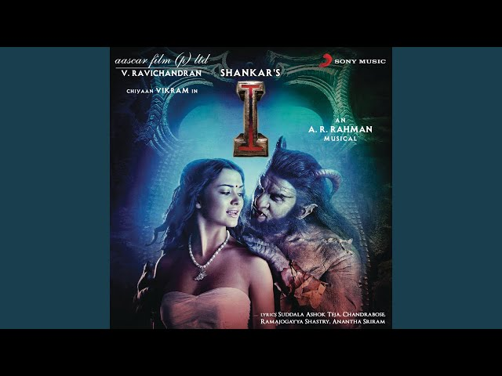

Nuvvunte Naa Jathagaa
song by Sid sriram
Lyrics :
Vee che chirugalini velivestha
Ho paare nadhinaaviri chestha
Nenunna nelantha maayam chestha
Thene ledhe avasarame
Nuvve naaku priya varamee..
Nuvvunte naa jathagaa
Nennunta upiriga
Nuvvunte naa jathagaa
Nenuntaa oopiriga
Nuvvunte naa jathaga nenunta upiriga
Nuvvunte naa jathagaa
Nenunnta upiriga
Nuvvunte naa jathaga nenunta upiriga
Nuvunte naa jathagaa nenunta upiriga
Nuvvaina nammavuga cheliya nenevarantu
Yevaru gurthincharuga
Naa premavu nuvvantu
Nee kosam ee lokam bahumanam chesestha
Nuvvuleni lokam lo
Nannu nenne bali chestha
Nuvvunte naa jathagaa..
Premaku ardham edhante
Ninnu nanne chupistha
Adosthe aa premaina
Naa chethultho narikestha
Sudhi dhaaram saayamtho
Kurulu meesam kuttestha
Neellanu dhaache kobbarila
Gundello ninnu kappestha
Aggi pulla anchuna roja puyuna
Puvvulloni thene purugulakandhuna
Mussale thagili mogganai molicha
Oochili chusina paapanai bedhira
Nuvvunte naa jathaga nenunta upiriga
Nuvvunte naa jathagaa
Nennunta upirigaa..
Nuvvunte naa jathaga nenunta upiriga
Nennunta upirigaa aa..
Nuvvu leni lokam lo ne brathakalene
Nuvvunte naa jathagaaâ€